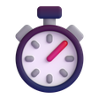

Müzik ve şarkı sözleri
Herhangi bir uygulamada çalan şarkı, kontroller ve senkron sözler.
↑ Üstteki çentiğin üzerine gel
Windows 10 & 11 için · Ücretsiz ve açık kaynak
Müzik ve şarkı sözleri, odak zamanlayıcısı, hava durumu, dosya rafı ve bildirimler — hepsi ekranın tepesindeki küçük, siyah bir çentikte.
Her sayfa ayrı bir özellik; istemediğini Ayarlar'dan kapat.
Herhangi bir uygulamada çalan şarkı, kontroller ve senkron sözler.
Dosya ve linkleri çentiğe bırak, sonra geri sürükle.

Pomodoro 25/5/15, çentikte canlı geri sayım.
Bulunduğun yer için anlık durum ve saatlik tahmin.
CPU ve RAM halkaları, canlı grafik.
Windows bildirimleri kısa bir “peek” olarak.
Hızlı liste ve sade, yerel bir takvim.
Her sayfayı aç/kapat, istersen minimal mod.
15 saniye dokunmazsan elle “Merhaba” yazar, gözlerini açar, uyur ve el sallar. Döndüğünde uyanır.
Sayfada 5 saniye hiçbir şeye dokunma
Apache-2.0 lisanslı. Her sürüm herkese açık kaynaktan GitHub Actions ile derlenir; katkılar çok değerli.
# build from source
git clone https://github.com/Yemresalcan/ada-notch
cd ada-notch
cargo run --releaseAda yeni ve henüz kod imzalı değil; tarayıcılar ve SmartScreen az indirilen dosyalar için itibar uyarısı gösterir. Bu bir virüs tespiti değildir.
Her şey bilgisayarında, %APPDATA%\Ada içinde kalır. Telemetri yok.
Ayarlar › Uygulamalar › Ada › Kaldır.
Hayır, Ada yalnızca Windows içindir.
Ücretsiz. Kurulum bir dakika sürmez.
Windows 10 1903+ veya 11 · x64 · SHA-256 değerleri · Tüm sürümler